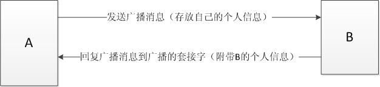
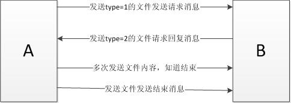

| 姓名 | 班级 | 学号 | 分工 | 表现 | 备注 |
|---|---|---|---|---|---|
| 卢亮 | 0703 | 2011E8013261173 | 前台 | 全部前端的代码以及与后台的交互，前台与后台多线程的管理。实验报告的撰写与格式处理。 | 组长 |
| 王国强 | 0703 | 2011E8013261175 | 后台 | Socket的初始化和释放，广播消息的收发和文件传输的后台代码。撰写实验报告中关于后台的部分，核心代码的注释。 | |
| 于英龙 | 0703 | 2011E8013261178 | 讨论与设计 | 积极参与实验的讨论和功能设计。因其表示代码经验较少，所以这次没有承担具体编码工作。 |
通过此实验，学习并掌握基于UDP的Socket编程。
输入对方IP地址，对方如果存在可以给对方发送文件。
整个实验在Windows®平台上进行开发。后台使用Visual Studio®2008，前台使用Qt®4.8.0。Visual Studio的安装参照相关文档。Qt的安装需要到Qt的官方网站下载QtSDK，然后按照界面提示默认的安装方法安装即可。（安装路径不能选择中文路径。）
本工具主要是实现局域网内用户进行聊天和文件传输的功能。
使用此工具时用户不需要知道对方的ip和端口号等信息，工具会在启动时向局域网内发送广播消息，而每个工具都会启动一个特定端口的接收广播消息的线程；例如，A刚启动，首先A向局域网内的用户发送广播消息，当B接收到消息后，会通过接收函数，得到A的socket信息，然后将B自己的信息发送A，这样A在发送广播消息一段时间后，基本上所有的局域网用户都会反馈信息，这样A将这些用户的信息存入list中，间隔性的更新list和前端页面显示的在线用户。
这样当用户需要向某个人发送信息时，只需要双击用户列表中对应的用户，然后就会弹出聊天窗口，这样就可以在普通聊天窗口进行聊天，或者在窗口中点击发送文件进行文件发送。

图1 广播消息流程
工具的广播流程如图1所示，A启动后会发送广播消息，B接收到A的广播消息后，会发送给A广播确认消息，然后A通过接收函数将B的socket信息进行记录，并且将B无重复的加入到用户列表中。

图2 文件发送流程
文件的发送流程如图2所示，A通过图形界面选择文件路径后，后天回打开文件，将文件名称和文件大小取出，将其发送给B，B收到A发送的type=1的文件发送请求后，B可以选择同意接收后者不同意接收，都会发送相应的信息，如果要发送不同意，那A收到不同意的信息后，会将文件关闭，本次文件传输结束；如果B发送同意传输，B会按照用户在图像界面上给的信息打开文件，A收到同意信息后，开始流量控制的发送文件内容，B收到文件内容后添加到文件中，最后A会发送文件传输结束的信息，A关闭文件，B收到此信息后也会关闭文件，本次文件传输结束。
在设计后台代码时，主要遇到的是对于windows环境下socket编程和线程的具体调用不熟悉，通过在网上查找大量资料，并且通过不断地尝试，才确定了最终的代码。
在设计消息格式时也考虑的很长时间，由于本工具中并不是接收到的消息都是需要显示的消息，有的是控制信息，就需要设定一个type指定消息的类型；并且设计两个不同套接字的接收：广播套接字和普通套接字，这两个套接字接收的消息的格式是否需要统一等问题。
在设计文件传输时，考虑是否需要重新建立一个file的socket，当文件传输时，建立此socket，文件传输完毕后关闭，但是考虑到时间有限，并且如果假如此socket后，后台代码socket太多，非设计此函数的设计人员理清需要花费大量的时间，并且架构设计不太完善，此次设计先暂不考虑，实验二时会考虑这样处理。
前台主要用C++图形界面库Qt来搭建，主面板继承自QWidget，综合运用了QListModel和QListView来与后台交换用户信息，显示用户列表。 文件传输和聊天窗口使用了多个QTextEdit和QPushButton控件以及进度条控件QProgressbar。QTextEdit会实时显示聊天内容，QPushButton可以控制消息和文件的收发，QProgressbar实时显示文件发送和接收的进度。
在设计前台的时候已经充分考虑到前后端的代码整合的问题，也多次为前后端的交互问题进行讨论。主要问题是数据的交换和事件控制，尤其多线程的引入也加大了任务的复杂程度。在实际开发过程中，我们尽量将前后端按功能进行严格区分，将前后端的接口控制到最少。最终的实现也比较顺利。
通过此次实验，我们更加熟悉的掌握了windows环境下socket编程及其函数应用、线程操作，对于系统架构方面也有了很大的进步。对于C++的图形界面工具Qt也有了更加深入的认识，对于我们以后的发展大有裨益。
在多人合作的实验中，进行设计之前必须进行详细的讨论，每个人都有明确的分工，然后再按照要求各司其职，这样在最后进行项目整合时才会比较容易，并且项目开发的效率也会比较高。
{kind=link}
{kind=link}